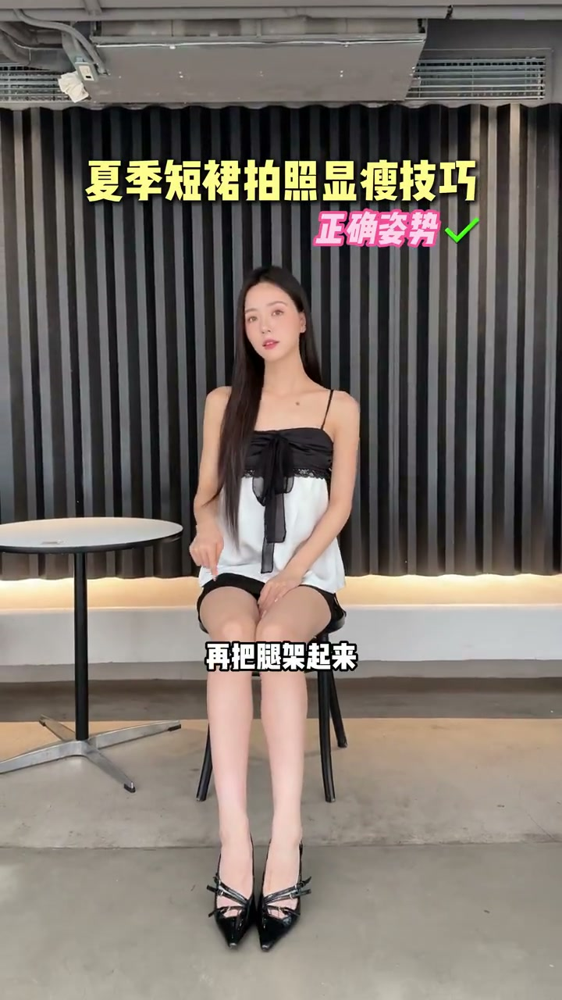
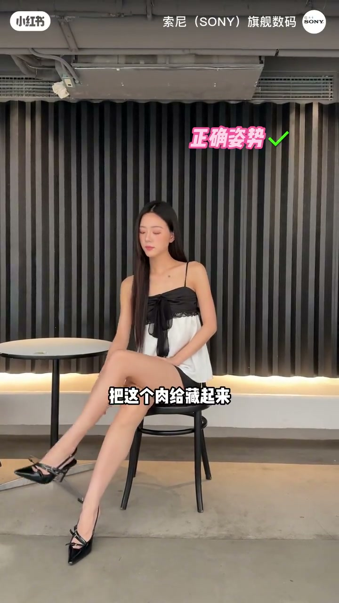
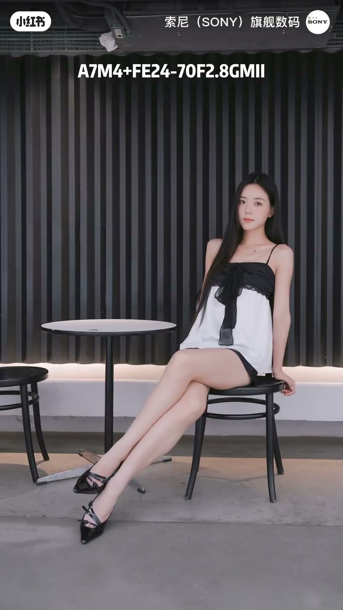

内容要点
一支 52 秒的短裙显瘦拍照教学：博主从坐姿腿往镜头前伸、架腿藏肉、蹲姿遮肉，到侧伸后翘、侧前方 45 度伸腿绷脚背，讲清短裙怎么拍才显瘦显腿长。
知识结构
[00:00→00:09]
坐姿基础
腿不要往里放显腿粗，往镜头前伸再把腿架起来，放松往上倾，脚背绷起显腿长。
[00:09→00:24]
蹲姿与藏肉
蹲着腿易压粗，哪里有肉用手挡住；架腿显粗时换成前面腿往后架把肉藏起来。
[00:24→00:52]
翘腿与伸腿
翘腿不是正面向后翘，而是侧伸面向镜头的腿后翘；腿往侧前方伸膝盖往下倒，双手后撑交叉腿绷脚背显长。
总结
短裙显瘦核心：腿往镜头前伸不往里放、架腿藏肉、翘腿侧伸面向镜头后翘、腿往侧前方 45 度伸出绷起脚背，双手后撑双腿交叉显长。
坐姿：腿前伸架起
坐着拍照腿不要往里放，会特别显腿粗。要往镜头前伸，再把腿架起来，不要用力，放松往上倾，脚背绷起显腿长。

蹲姿与架腿藏肉
蹲着腿会容易压粗，哪里有肉就用手挡住、单手托脸。架腿显腿粗的，换成前面这条腿往后架，把这个肉给藏起来；右手挡肚子左手撩头发。

翘腿与侧前伸腿
翘腿不是正面向后翘，而是侧伸、面向镜头的腿后翘，撩发看镜头。想要腿更长，把腿往侧前方伸再把膝盖往下倒，双手后撑，双腿交叉不往前伸，往侧前方 45 度伸出去绷起脚背。
